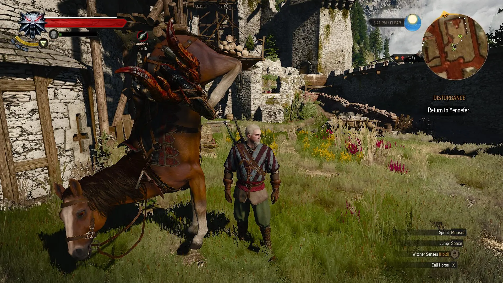

Home
World of Bugs (WOB) is a platform that supports research in Automated Bug Detection (ABD) in video games.
What is Automated Bug Detection (ABD)?
Anyone who has played a game has encountered a bug at some point and probably knows that they come in all shapes and sizes. During development, the development and Quality Assurance (QA) teams take costly steps to try and prevent bugs from making it to release. Many strategies are used, ranging from Unit Testing to Functional Testing, some of which can be (at least partially) automated. ABD attempts to automate some of the more time-consuming aspects of video game testing, this typically includes game playing, but also the identification of bugs themselves.
Automated Game Playing
A large part of ABD involves devising systems that can automatically play and explore video game just like a human game tester would. An automated game player is referred to as an agent. These game playing agents take actions in the game environment in the same way that a human would using a virtual game-pad. The agent observes what happens and acts to achieve some predefined goal (e.g. complete the level).
Perhaps unsurprisingly developing game playing agents can be very difficult. Games are often made to present some challenge to the player with a variety of obstacles, puzzles and enemies. Only in the last few years have agents been able to play with any video games with any real skill. Early attempts at playing Atari 2600 games with deep reinforcement learning started a trend in researchers attempting to tackle ever more complex games. More recently progress has been made on games that are widely recognised as requiring significant skill such as Dota2 and Starcraft. These systems still require an unrealistic amount of resources to be practical for testing video games, nevertheless they are perhaps an early indication that ABD may form part of the standard toolkit for video game testing in the not so far future.

In the majority of research in automated game playing an agent has a goal, usually to win. In the Atari 2600 example, the goal is specified using a reward that is derived from the in-game score. For ABD, what is the goal? How should it be specified? At a high level, the goal is to explore the game to find bugs. The agent should have good coverage, meaning that it should explore as much of the game as possible, visit all the areas, complete all the levels, fight all the enemies etc. We might think of the ABD agent as the most eager completionist. Not only does it want to find all the collectables, but also see everything there is to see. In this sense, the agent is a game player of the most hardcore variety.
The question of how to specify the goal of such an agent is an open one. Placing this question aside for a moment in favour of a more immediate problem, how is an agent to know that is has encountered a bug on its travels through its favourite game? This is the problem of bug identification.
Automated Bug Identification
The second facet to the problem of ABD is that of bug identification. When a human tester encounters a bug, how to they know? It could just be some wacky game mechanic, perhaps horses are supposed to do handstands.

The waters become a murky around this point. A human tester might have access to a specification that they work from that explicitly states "horses don't do handstands". In practice this tends not to be the case. Human testers use their vast experience both in-game and in the real world, along with a high-level description of the intended behaviour of the game to decide whether the horse is behaving correctly. The high level description is not an exhaustive list of every interaction possible, and is written in plain language with all its vagaries.
How then might an agent go about identifying bugs?
Rules
A common approach, which is sufficient in many cases, is to use rules, conditions or guards to determine whether a particular interaction is valid. An example might be to check the players y-position relative to the ground to ensure they haven't fallen out of the world. This kind of checking is hardly automated, the real automation comes from the automatic game playing, and is limited to cases whether the interaction is easily specified. A more difficult case might be to check whether the scene is rendered correctly, or that the player is not able to see things they shouldn't. Traditionally these kinds of problems are left to the human testers to find.
Learning
Learning is a promising new avenue for detecting issues. Machine learning, and in particular machine vision is already being used to detect unusual (anomalous) situations in video footage in a range of domains from monitoring CCTV monitoring to filtering inappropriate content on popular video streaming sites. Now, this technology is being explored for the automatic identification of bugs in video games. The ideal is simple at its core, but challenging to implement in practice, it is as follows.
Using the vast amount of observations collected as the agent plays the game, it can learn an internal model of the world it finds itself in. The agent develops an expectation about what should happen, and can compare this expectation with what actually happens, if the expectation is not met then one of two things has happened:
- The agent's model was wrong, it needs to be updated.
- The world was wrong, it needs to be updated.
The question now is, how to distinguish between case 1 and case 2? This is an open issue, but it is clear that the agent needs some additional information that it cannot learn just by playing the game. For the human tester, this information is in the broader development and design context - the intended behaviour. This information can come in the form of Inductive Bias where certain assumptions about the statistical properties or features of bugs can inform the agent. Inductive biases are akin to special 'meta'-rules that are subtly encoded into the learning algorithm.
Another approach that is currently being explored is a kind of human-in-the-loop learning, where the agent poses questions to a human tester/designer about the intended behaviour when its expectations are not met.
Human Tester vs Machine Tester
If ABD is successfully implemented as part of a testing toolkit it promises to save many hours of manual work, primarily those sunk into game playing and produce games that have been tested more thorough and therefore (hopefully) contain fewer bugs. The main advantages of using software agents for testing relate to coverage. Coverage is an important metric that determines how much of the game has been tested, in general software terms this equates to the proportion of code paths were checked for issues. ABD have some distinct advantages over human game testers:
- Massive Parallelism - many software agents can play the game simultaneously each exploring different areas/testing different interactions.
- No Breaks - software agents don't sleep, eat or get eye ache.
- Super Speed - software agents have lightning fast reaction times, the game can potentially be run much faster than usual.
This looks great on paper - more coverage = fewer bugs, but human testers still tend to do a much better job. This is a problem of quality over quantity. Currently, humans also have some distinct advantages over agents:
- Directed Search - Human testers are currently much more efficient with their search, they can direct their search to areas they feel are more unstable, or more likely to contain bugs.
- Shallow Learning Curve - Human testers need relatively little practice to play a new game, and can quickly become proficient. Software agents, for example those based on Reinforcement learning currently need many millions of tries to become proficient and in some cases they are still unsuccessful.
- High-level Understanding - Identifying some bugs requires a high-level understanding of the intended behaviour of the game, this comes easily to a human tester who can just talk to the design team, but is much more difficult for a software agent.
The above constitute some of the most challenging open problems in ABD and in AI more broadly. The aim of the World of Bugs platform is to empower researchers to begin tackling associated problems and develop more sophisticated ABD agents.